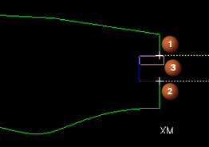
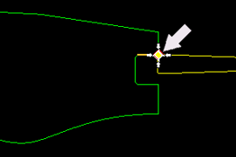
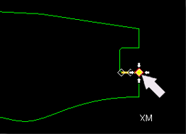
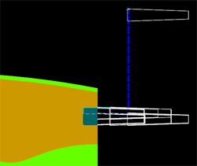

Cut the groove on the front face
-
Create a Groove Face operation.
In the Location group, set the options as shown.
Program = PROGRAM
Tool = OD_GROOVE_L
Geometry = AVOIDANCE
Method = LATHE_GROOVE
-
In the Geometry group, in the Cut Regions row, click Edit
 .
.
You will define trim points that constrain the cut region so that only the groove on the face is cut.

Define two trim points (1, 2) at the ends of the horizontal lines to define the cut region (3).
-
In the Cut Regions dialog box, in the Trim Point 1 group, from the Point Option list, select Specify.
-
Click Inferred Point
 .
.
-
Select the end of the horizontal line.

-
In the Trim Point 2 group, from the Point Option list, select Specify.
-
Select the end of the horizontal line.

-
Click OK to accept the geometry containment.
-
Generate the tool path using a 2D tool display.



-
Click OK to complete the operation.
-
In the Operation Navigator, right-click in the background and choose Program Order View.
|
NC_PROGRAM |
 PROGRAM
PROGRAM CENTERLINE_SPOTDRILL
CENTERLINE_SPOTDRILL CENTERLINE_BREAKCHIP
CENTERLINE_BREAKCHIP FACING
FACING